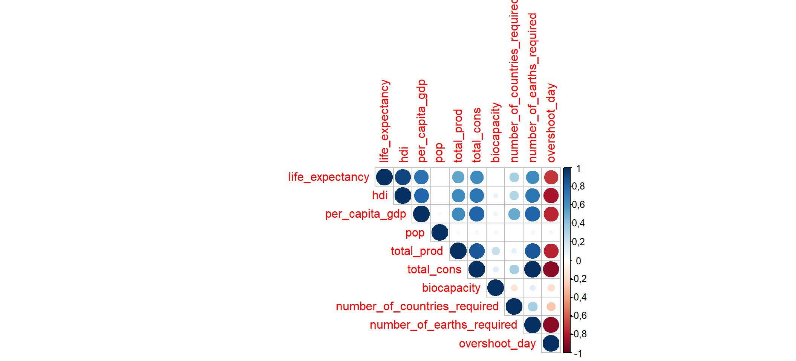
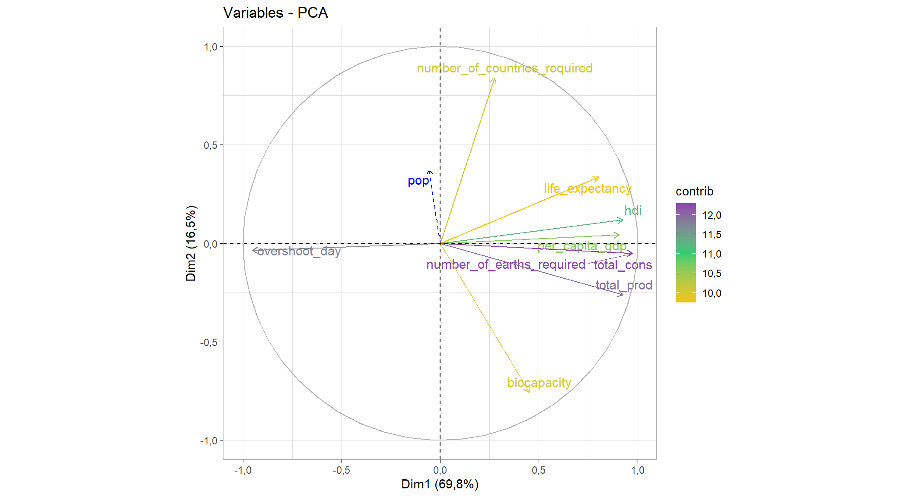
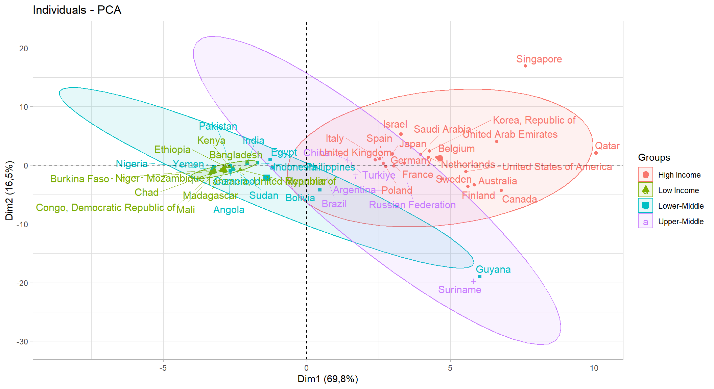
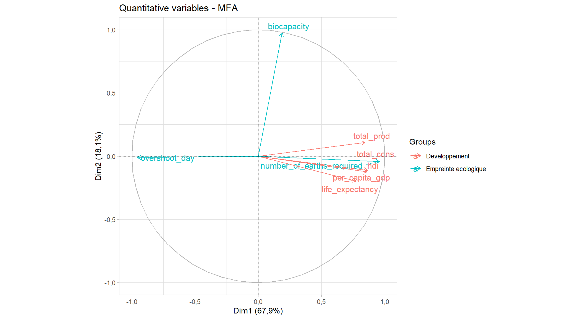
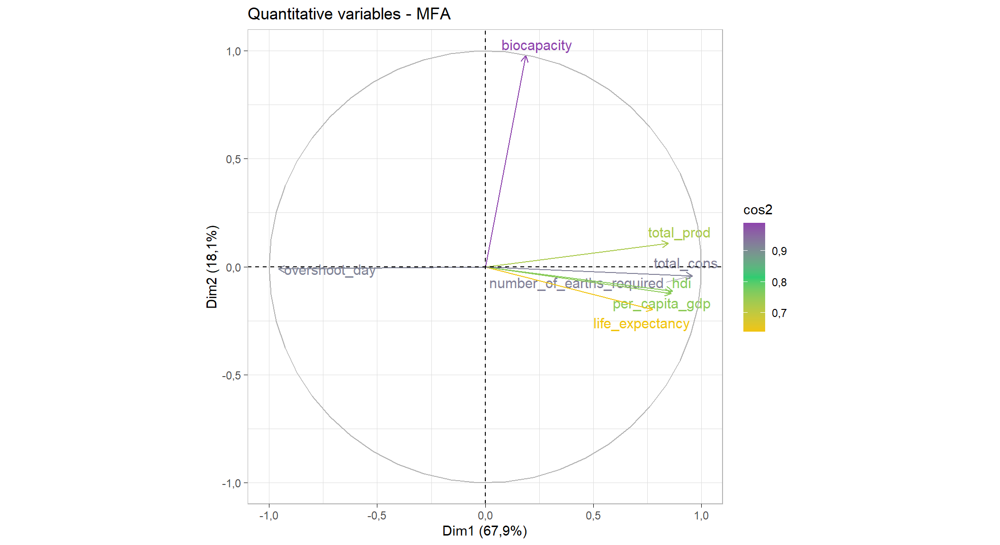
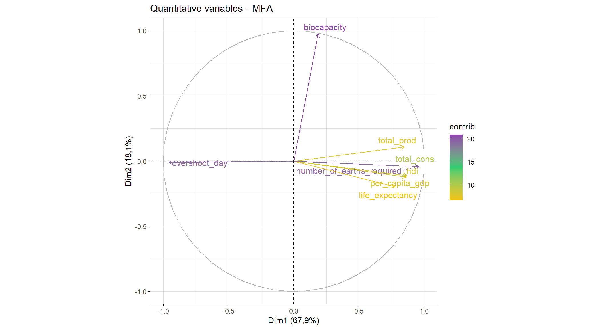
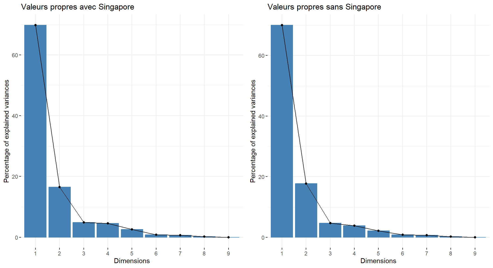

packages_ <- c("ggplot2", "dplyr","readxl","cowplot")
for (pkg in packages_) {
if (!requireNamespace(pkg, quietly = TRUE)) {
install.packages(pkg, dependencies = T)
}
library(pkg, character.only = TRUE)
}Djamaldbz - Méthodes d’Analyse factorielle TP02
Description des données
Le jeu de données utilisé dans ce premier cas pratique provient du site web de Global Footprint Network. Il contient les résultats d’empreinte écologique et de biocapacité pour 184 pays.
Les données sont disponibles sur <https://marieetienne.github.io/datasets/overshootday_overview.csv>.
Quelques définitions
Le calcul de l’empreinte écologique et de la biocapacité nous aide à répondre à la question de recherche fondamentale : Quelle est la demande des êtres humains envers les surfaces biologiquement productives (empreinte écologique) par rapport à la quantité que la planète (ou la surface productive d’une région) peut régénérer sur ces surfaces (biocapacité) ?
Hectare global (gha) : C’est l’unité choisie pour exprimer toutes les quantités d’intérêt concernant la consommation/émission de carbone. Une unité de surface correspondant à la productivité moyenne d’un hectare de terres mondiales. Un hectare de terres agricoles vaudra plus d’hectares globaux qu’un hectare de désert.
Empreinte écologique (en gha par personne) : Le nombre de gha requis pour produire les besoins et absorber les déchets d’un pays.
Biocapacité (en gha) : La capacité d’un pays à produire ce dont il a besoin et à absorber ses déchets (réserve écologique).
Jour de dépassement : Jour de l’année où la demande d’un pays dépasse sa biocapacité annuelle.
Analyse des données
Chargement des données
##-- Installer et Charger les packages requis
###--- vecteurs des packages
packages <- c("factoextra", "corrr", "FactoMineR", "dplyr","kableExtra","corrplot",
"explor")
###--- Boucle pour installer et charger les packages
for (pkg in packages) {
if (!requireNamespace(pkg, quietly = TRUE)) {
install.packages(pkg, dependencies = T)
}
library(pkg, character.only = TRUE)
}
##-- charger la base de données via le lien web
link.to.data <- "https://marieetienne.github.io/datasets/overshootday_overview.csv"
df <- read.csv(link.to.data)Analyse exploratoire des données
nrow(df); ncol(df) ;dim(df)[1] 182[1] 13[1] 182 13Les données sont composées de 182 lignes et de 13 colonnes.
Résumé statitique des variables
On utilise la commande summary(df) tout simplement, mais pour une question d’exthétique on utilise ce code.
##-- summary pour les variable numériques
summary.df.num <- sapply(df[sapply(df, is.numeric)], function(x) {
c(
min = min(x, na.rm = TRUE),
Q1 = quantile(x, 0.25, na.rm = TRUE),
Q3 = quantile(x, 0.75, na.rm = TRUE),
med = quantile(x, 0.5, na.rm = TRUE),
mean = mean(x, na.rm = TRUE),
max = max(x, na.rm = TRUE),
count = sum(!is.na(x)),
sd = sd(x, na.rm = TRUE),
`NA's` = round(sum(is.na(x)),0)
)
})
summary.df.num <- as.data.frame(summary.df.num)Ensuite nous affichons ce resumé dans un tableau :
| life_expectancy | hdi | per_capita_gdp | pop | total_prod | total_cons | biocapacity | number_of_countries_required | number_of_earths_required | overshoot_day | |
|---|---|---|---|---|---|---|---|---|---|---|
| min | 52,525000 | 0,3850000 | 732,836 | 0,06200 | 0,371747 | 0,5540298 | 0,1041268 | 0,0180633 | 0,3668548 | 41,0000 |
| Q1.25% | 65,747000 | 0,5945000 | 4888,255 | 2,64100 | 1,156834 | 1,2195240 | 0,6633750 | 0,8273357 | 0,8075166 | 143,0000 |
| Q3.75% | 76,400695 | 0,8350000 | 31670,000 | 32,91550 | 3,828778 | 3,8418335 | 2,6656718 | 2,7330613 | 2,5438978 | 365,0000 |
| med.50% | 71,900000 | 0,7310000 | 13548,200 | 10,01950 | 1,924223 | 2,3197815 | 1,3622344 | 1,7280656 | 1,5360601 | 239,0000 |
| mean | 71,180320 | 0,7177193 | 21139,464 | 43,47636 | 2,879469 | 2,9624675 | 3,5569055 | 2,9127705 | 1,9616192 | 239,7802 |
| max | 84,445610 | 0,9620000 | 120505,000 | 1480,63200 | 13,394536 | 13,1263342 | 85,6461100 | 55,1061868 | 8,6916969 | 365,0000 |
| count | 175,000000 | 171,0000000 | 163,000 | 182,00000 | 182,000000 | 181,0000000 | 181,0000000 | 181,0000000 | 181,0000000 | 182,0000 |
| sd | 7,615465 | 0,1533110 | 22330,819 | 156,03751 | 2,515235 | 2,1957327 | 10,0256869 | 5,1916277 | 1,4539202 | 109,5507 |
| NA’s | 7,000000 | 11,0000000 | 19,000 | 0,00000 | 0,000000 | 1,0000000 | 1,0000000 | 1,0000000 | 1,0000000 | 0,0000 |
Note: aby Djamal Y. TOE
Nous constatons que ceraines variables ont des données manquantes, nous pouvons décider de soit les supprimer, soit les prédire avec des méthodes d’imputation en fonction de leurs importances. Mais pour le moment nous allons juste les supprimer.
df <- na.omit(df)
nrow(df)[1] 162Ainsi nous passons de 182 à 162 lignes.
Contruction de l’Analyse en composante principale
Le poids pour les pays : Les tailles respectives des populations de chaques pays car cela garantit que l’analyse est représentative des différences globales, en tenant compte de l’impact démographique des pays.
Métrique : Normalisation des données car les variables ne sont pas toutes sur la même échelle. Cela permet d’éviter que les variables avec de grosses valeurs (grandes échelles) dominent l’analyse.
variables sup :
- Quali sup : region, income_group
- Quanti sup : pop
Réalisation de l’ACP
- Vérifions la corrélations entre les variables quantitatives
numeric.vars <- as.data.frame(df[sapply(df, is.numeric)])
M <- round(cor(numeric.vars),2) #- Calculer la matrice de corrélation
##-- créer un objet qui contient une palette de couleur pour le gradiant dans le plot
col <- colorRampPalette(c("#BB4444", "#EE9988", "#FFFFFF", "#77AADD", "#4477AA"))
##-- dessiner le graphique
corrplot(M, method="color", col=col(200),
type="upper", order="hclust",
addCoef.col = "black", #- ajout des coefficients correlation
tl.col="black", tl.srt=45, tl.cex = 1
, #- couleur, rotation et police de texte des libellés
##-- ne pas afficher les coefficients de corrélations sur la diagonale (ils valent tous 1)
diag=FALSE
) 
On voit qu’il y’ a quand même des variables qui sont <
- Création du modèle de l’ACP
data.pca <- df[,-1] #- sélectionner toute les variables sauf la variable pays
rownames(data.pca) <- df[,1] #- renommer les lignes avec les noms des pays (individus)
poids <- df$pop
pca.model <- PCA(data.pca, scale.unit = TRUE,
quali.sup = c("region", "income_group"),
graph = FALSE,
row.w = data.pca$pop,
quanti.sup = 6)
##- explor(pca.model) pour une interface interactiveRecupération des valeurs propres et des variances
eigen.values <- pca.model$eig
knitr::kable(eigen.values[1:3,2:3], caption = capTab("Inerties expliquées par les 3 premiers axes"))| percentage of variance | cumulative percentage of variance | |
|---|---|---|
| comp 1 | 69,758338 | 69,75834 |
| comp 2 | 16,485374 | 86,24371 |
| comp 3 | 4,865912 | 91,10962 |
On remarque que les axes 1,2 et 3 représentent respectivement 69,76, 16,49 et 4,09, donc au total 91,11
On pourrait aussi visualiser le graphique des valeurs propres :
plt.eig <- fviz_eig(pca.model, title = "Valeurs propres avec Singapore")Qualité de representation des plans / sur les plans
- Qualité de representation des plans
Le premier plan a un taux d’inertie supérieur à 86 %, il capte une grande partie de l’information présente dans les données ce qui signifie qu’il à une bonne qualité de representation alors que le second (1-3) en capte environ 74,63 % donc a une faible qualité de représenatation comparé au premier. En depit de ce fait, les deux plans ont quand même qualité de représentation si mous fions au critère du taux d’inertie.
Qualité de representation sur les plans
- (1-2)
LES VARIABLES
graph.cos2.var <- fviz_pca_var(pca.model,col.var="cos2", gradient.cols=c("#F1C40F","#2ECC71","#8E44AD"), repel=TRUE, ggtheme = theme_light())
graph.cos2.varConcernant les variables, on constate qu’elles toutes sont bien representées avec des cosinus carrés qui ont une valeur minimale environ 0,8 à part les variables biocapacity, life_expectancy, number_of_countries_required qui ont un cosinus carrés qui vaut environ 0,7.
LES INDIVIDUS
threshold <- 0.85
data.ind.cos2 <- pca.model$ind$cos2
dim1 <- data.ind.cos2[,"Dim.1"]
dim1 <- dim1[dim1 >= threshold]
countries.dim1 <- names(dim1)
names(dim1) <- NULL
dim2 <- data.ind.cos2[,"Dim.2"]
dim2 <- dim2[dim2 >= 0.6]
countries.dim2 <- names(dim2)
names(dim2) <- NULL
##-- crétion des dataframes
dim1.df <- data.frame(
Country = countries.dim1,
`Cos carré` = dim1
) %>% arrange(desc(dim1))
dim2.df <- data.frame(
Country = countries.dim2,
`Cos carré` = dim2
) %>% arrange(desc(dim2))
##-- création des tableaux kableExtra
dim1.tbl <- kableExtra::kbl(dim1.df, caption = capTab("Individus ayant un cosinus carré supérieur ou égal à 0,85 sur l'axe 1")) %>%
kable_styling(bootstrap_options = c("striped", "hover", "condensed", "responsive")) %>% add_footnote(label = "Source des données : https://marieetienne.github.io/datasets/overshootday_overview.csv")
dim2.tbl <- kableExtra::kbl(dim2.df, caption = capTab("Individus ayant un cosinus carré supérieur ou égal à 0,6 sur l'axe 2")) %>%
kable_styling(bootstrap_options = c("striped", "hover", "condensed", "responsive")) %>% add_footnote(label = "Source des données : https://marieetienne.github.io/datasets/overshootday_overview.csv")dim1.tbl| Country | Cos.carré |
|---|---|
| Rwanda | 0,9810454 |
| Nepal | 0,9772128 |
| Haiti | 0,9763067 |
| Pakistan | 0,9745537 |
| Sao Tome and Principe | 0,9617076 |
| India | 0,9558559 |
| Kenya | 0,9448689 |
| Togo | 0,9425662 |
| Malawi | 0,9425394 |
| Tanzania, United Republic of | 0,9419010 |
| Ethiopia | 0,9390190 |
| Gambia | 0,9377395 |
| Poland | 0,9272053 |
| Yemen | 0,9228666 |
| Czech Republic | 0,9218239 |
| Austria | 0,9047663 |
| Guatemala | 0,9044971 |
| Myanmar | 0,8964483 |
| Burundi | 0,8916493 |
| Cambodia | 0,8911437 |
| Denmark | 0,8896874 |
| United States of America | 0,8875048 |
| Slovenia | 0,8840522 |
| Malaysia | 0,8840507 |
| Benin | 0,8831711 |
| Sudan | 0,8713134 |
| Senegal | 0,8705626 |
| Timor-Leste | 0,8640862 |
| Belgium | 0,8604596 |
| Angola | 0,8591836 |
| Ghana | 0,8579621 |
| Sierra Leone | 0,8542504 |
| Slovakia | 0,8524619 |
| a Source des données : https://marieetienne.github.io/datasets/overshootday_overview.csv |
dim2.tbl | Country | Cos.carré |
|---|---|
| Namibia | 0,7502317 |
| Paraguay | 0,6807204 |
| Brazil | 0,6672407 |
| Bolivia | 0,6609662 |
| Barbados | 0,6458843 |
| a Source des données : https://marieetienne.github.io/datasets/overshootday_overview.csv |
AXE 1 : On voit que les pays (individus) comme le Togo, le Yemen, les USA, le Rwanda sont tres bien representés. RMRQ : Il y en a d’autres
AXE 2 : Il n’y a que 6 pays qui sont bien représentés sur cet axe. Il s’agit de la Namibie, le Paraguay, le Brésil, la Bolivie et Barbados.
REMARQUE : Pour le plan formé des axes 1 et 3, on peut procéder la même que celle en amont
Caractérisation des axes
graph.contrib.var <- fviz_pca_var(pca.model,col.var="contrib", gradient.cols=c("#F1C40F","#2ECC71","#8E44AD"), repel=TRUE, ggtheme = theme_light())
graph.contrib.var
Identifications des pays en fonction de leur groupe de revenu
Il s’agit juste d’une parenthèse qui n’a rien avoir avec l’objectif de l’étude
##-- Définitions des groupes de revenus
income_groups_definitions <- c(
"UM" = "Upper-Middle",
"LM" = "Lower-Middle",
"HI" = "High Income",
"LI" = "Low Income"
)
##-- Ajouter une colonne avec les définitions correspondantes
data.pca$income_group_def <- as.factor(income_groups_definitions[data.pca$income_group])
graph_indiv <- fviz_pca_ind(
pca.model,
select.ind = list(
contrib = 50
),
invisible = c("quanti.sup","ind.sup"),
habillage = data.pca$income_group_def,
addEllipses = TRUE,
repel = TRUE,
) + theme_light()
graph_indiv
#hc.pca <- HCPC(pca.model, nb.clust=3) On voit que les groupes ne sont pas bien séparés, raison pour laquelle les ellipses ont des partie qui coïncident. Cela pourrait signifier que les les groupes de revenus sont trop similaires pour etre clairement séparés sur les axes sélectionnés (dans le plan des composantes principales). Cela pourrait aussi fait cas d’hétérogénéité, c’est-à-dire que les groupes ne sont pas homogènes (grande variabilité intra-groupe).
A bien regarder, nous aurions pu les regrouper en trois groupes de revenu, en combinant les Low income et les Low middle income, les Upper middle income (avec certains pays du High income) et enfin le dernier groupe les high income. Il faut noter que tout ça n’est que purement visuel même si on a quand même une grande partie de l’information contenue dans les données rien qu’avec ces deux plans (plus de 80%).
Deux ACP différentes
Pourquoi réaliser deux ACP différentes ?
Pour simplement calculer la 1-ère valeur propre de chaque groupe de variables (empreinte écologique et de developpement) afin de les utiliser ponderer les variables afin qu’elles contribuent de manière équitable à la formation des axes. Pour plus de détails aller à la sous-section et sur le site de mon professeur de Méthodes d’Analyses Factorielles en cliquanr sur ce lien https://marieetienne.github.io/MAF/01_afm.html#/title-slide.
On préfère utiliser la première valeur propre (\(\lambda_{k1}\)) car elle capturerait l’essentiel de l’inertie d’un groupe et permet une pondération cohérente et équilibrée dans l’AFM. La seconde valeur propre reflète des structures secondaires ou résiduelles qui ne sont pas pertinentes pour normaliser les contributions des groupes dans l’analyse globale.
variables.empreinte <- df[, c("total_prod", "total_cons", "biocapacity", "number_of_earths_required", "overshoot_day", "pop")]
rownames(variables.empreinte) <- df$country
variables.developpement <- df[, c("life_expectancy", "hdi", "per_capita_gdp","pop")]
rownames(variables.developpement) <- df$countryACP sur les variables d’empruntes écologiques
Il s’agit ici de faire l’ACP que sur les variables d’empruntes écologiques et de mettre les autres variables (de developpement) en quantitatives supplémentaires.
data.pca <- df[,-1] ## sélectionner toute les variables sauf la variable pays
rownames(data.pca) <- df[,1] ## renommer les lignes avec les noms des pays (individus)
poids <- df$pop
acp_empreinte <- PCA(data.pca, scale.unit = TRUE,
quali.sup = c("region", "income_group"),
graph = FALSE,
row.w = data.pca$pop,
quanti.sup = c(6,1,2,3))
##-- 1ere valeur propre
acp_empreinte$eig[1,1][1] 4,115324La première valeur propre est : 4,12
ACP sur les variables d’empruntes écologiques
acp.developpement <- PCA(data.pca, scale.unit = TRUE,
quali.sup = c("region", "income_group"),
graph = FALSE,
row.w = data.pca$pop,
quanti.sup = 6:12)
##-- 1ere valeur propre
acp.developpement$eig[1,1][1] 2,592046La première valeur propre est : 2,59
Réalisons l’AFM manuellement
variables.empreinte.pond <- variables.empreinte[,-ncol(variables.empreinte)]/sqrt(acp_empreinte$eig[1,1])
variables.developpement.pond <- variables.developpement[,-ncol(variables.developpement)]/sqrt(
acp.developpement$eig[1,1]
)
variables.empreinte.pond$group <- "Empreinte écologique"
variables.developpement.pond$group <- "developpement"
df.afm <- cbind(variables.empreinte.pond,
variables.developpement.pond,
pop = df$pop,
region = df$region,
income_group = df$income_group)
acp.afm <- PCA(df.afm, scale.unit = TRUE,
quali.sup = c("region", "income_group", "group"),
graph = FALSE,
row.w = df.afm$pop,
quanti.sup = 9)
variance.cum.val.prop.2acp <- acp.afm$eig[, c(1,3)]
colnames(variance.cum.val.prop.2acp) <- c("Valeur propres", "Pourcentage de variance cumulée")kableExtra::kbl(variance.cum.val.prop.2acp, caption = capTab("Valeurs propres et variances cumulées de chaque axes issues d'une AFM manuelle")) %>%
kable_styling(bootstrap_options = c("striped", "hover", "condensed", "responsive")) %>% add_footnote(label = "Source des données : https://marieetienne.github.io/datasets/overshootday_overview.csv")| Valeur propres | Pourcentage de variance cumulée | |
|---|---|---|
| comp 1 | 5,4257689 | 67,82211 |
| comp 2 | 1,3223267 | 84,35120 |
| comp 3 | 0,6522681 | 92,50455 |
| comp 4 | 0,3973880 | 97,47190 |
| comp 5 | 0,1005256 | 98,72847 |
| comp 6 | 0,0689548 | 99,59040 |
| comp 7 | 0,0327679 | 100,00000 |
| comp 8 | 0,0000000 | 100,00000 |
| a Source des données : https://marieetienne.github.io/datasets/overshootday_overview.csv |
REALISATION DE L’AFM
Pourquoi réaliser une AFM au lieu d’une ACP tout court?
L’Analyse Factorielle Multiple (AFM) permet d’aller au-delà des limites d’une Analyse en Composantes Principales (ACP) classique, particulièrement lorsque les variables d’un jeu de données ne sont pas à la même échelle ou lorsqu’elles sont organisées en groupes. La normalisation dans l’ACP sert à ramener toutes les variables à une même échelle, évitant ainsi que certaines variables dominent artificiellement l’analyse en raison de leur variance plus élevée. Par exemple d’autres ont une contribution élevée que d’autres alors que c’est juste l’unité de mésure qui pèse plus.
Cependant, cette normalisation n’est pas suffisante lorsque les variables sont regroupées par thématique ou nature. Par exemple, supposons un jeu de données contenant \(n\) variables, parmi lesquelles \(n - k\) \(\text{avec k telque } \forall \text{ j} \neq \text{k, }\)
\(\text{n - k} > \text{n - j où n - j est le nombre de variables dans tous les autres groupes ou dans un autre groupe j}\) appartiennent à un groupe \(i\) .Dans ce cas, le groupe \(i\) peut influencer de manière disproportionnée les résultats de l’ACP, simplement en raison de la taille du groupe. Cela signifie que, même après normalisation, le poids collectif du groupe \(i\) dans la construction des composantes principales pourrait être trop important par rapport aux autres groupes.
L’AFM résout ce problème en intégrant un poids équilibré entre les groupes. Elle considère chaque groupe comme une entité, indépendamment du nombre de variables qu’il contient. Cela permet une contribution équitable des groupes aux axes factoriels. Par conséquent, l’AFM est particulièrement adaptée dans des contextes où les variables appartiennent à des thématiques distinctes (par exemple, des groupes liés à des disciplines différentes : santé, économie, environnement).
Il est crucial de préserver l’équilibre des contributions entre ces thématiques pour éviter les biais d’interprétation. Ainsi, l’AFM fournit une perspective multidimensionnelle plus équilibrée et pertinente pour analyser des jeux de données complexes, tout en respectant la structure inhérente des variables
Réalisons l’AFM à présent
#-- création de la table pour l'AFM. Les vriables doivent être rangées
#-- suivant le groupe (variables du groupe 1 ensuite celles du groupe 2 ...)
data.afm <- data.pca %>%
select(
life_expectancy, hdi, per_capita_gdp, ##-- Variables de developpement
total_prod, total_cons, biocapacity, ##------ Variables
number_of_earths_required, overshoot_day ##-- d'empreinte écologique
)
model.afm <- MFA(
data.afm,
group = c(5, 3), ##-- Spécifie le nombre de variables dans chaque groupe
type = rep("s", 2), ##-- Indique que les variables doivent être normalisées pour chaque groupe
name.group = c("Developpement", "Empreinte ecologique"), ##-- Nommer les groupes
graph = F ##-- Générer un graphique
)
variance.cum.val.prop.afm <- model.afm$eig[, c(1,3)]
colnames(variance.cum.val.prop.afm) <- c("Valeur propres", "Pourcentage de variance cumulée")kableExtra::kbl(variance.cum.val.prop.afm, caption = capTab("Valeurs propres et variances cumulées de chaque axes issues d'une AFM avec R")) %>%
kable_styling(bootstrap_options = c("striped", "hover", "condensed", "responsive")) %>% add_footnote(label = "Source des données : https://marieetienne.github.io/datasets/overshootday_overview.csv")| Valeur propres | Pourcentage de variance cumulée | |
|---|---|---|
| comp 1 | 1,9203865 | 67,85068 |
| comp 2 | 0,5123847 | 85,95414 |
| comp 3 | 0,2050340 | 93,19836 |
| comp 4 | 0,0790131 | 95,99003 |
| comp 5 | 0,0659024 | 98,31848 |
| comp 6 | 0,0327210 | 99,47457 |
| comp 7 | 0,0148713 | 100,00000 |
| comp 8 | 0,0000000 | 100,00000 |
| a Source des données : https://marieetienne.github.io/datasets/overshootday_overview.csv |
On voit qu’il n’y a pas très grande différence entre les pourcentage de variances cumulées des deux AFM (manuellement @variance.cum.val.prop.2acp et avec R) parcontre les valeurs propres ne sont pas les mêmes.
On peut visualiser les variables
fviz_mfa_var(model.afm, axes = c(1,2), choice= "quanti.var", repel = T) + theme_light()
On peut visualiser leur qualité de representation
graph.cos.var.afm <- fviz_mfa_var(model.afm, axes = c(1,2), choice= "quanti.var", col.var="cos2", gradient.cols=c("#F1C40F","#2ECC71","#8E44AD"), repel = T, ggtheme = theme_light())
graph.cos.var.afm
Leur contribution à la formation des axes
graph.contrib.var.afm <- fviz_mfa_var(model.afm,col.var="contrib", gradient.cols=c("#F1C40F","#2ECC71","#8E44AD"), repel=TRUE, ggtheme = theme_light())
graph.contrib.var.afm
Comment l’ACP est-elle modifiée si on retire Singapour de l’analyse ?

On voit que rien ne se passe (pas de changement brusque) au niveau de la qualité des axes. Voyons de plus prêt ce qui se passe :
On voit que Singapore est atypique. Cela pourrait signifier que Singapore participe fortement à la formation de l’axe 2 (point plus proche de l’axe 1).
Et pourtant il contribue fortement à la formation de l’axe 2, il est même celui qui contribue les plus à la formation des axes. Le fait que Singapore contribue le plus à la formation des axes et que rien ne change lorsqu’il est retiré de l’analyse s’explique tout simplement par sa taille de population. En effet la taille de la population a été utilisée comme poids des individus qui sont ici les pays.